Contents
- Home
- Introduction
- Implementation
- Image Acquisition
- Simple Pixel Averaging
- Response Curves
- Tone Mapping (Matlab)
- Reinhard's Local Tone Mapping
- Reinhard's Global Tone Mapping
- Ward's Algorithm
- Results Comparison 1
- Results Comparison 2
- Datasets
- Code
- Git Logs
- References
|
Ward's algorithm
As creating HDR images requires taking pictures with various exposures, one possible issue that can arise is some movement in the camera between photos. This would cause some of the pixels in the images to be misaligned and can possibly harm the HDR results. Therefore, author Greg Ward (Ward, 2003) proposed a solution to this problem by describing a method that can be used to align images for better HDR results. The method involves creating bitmaps of the images to be aligned, filtering them down by factors of two (as shown below), and then greedily searching for the alignment that minimizes the difference between images.
 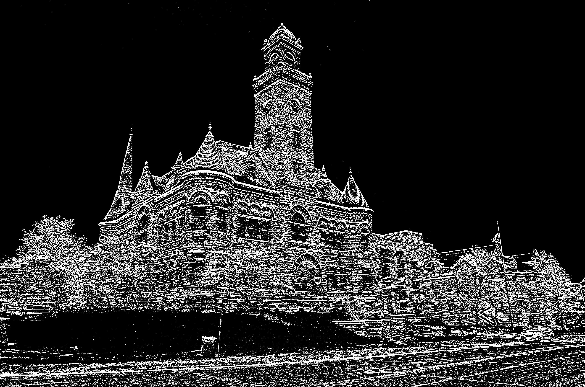
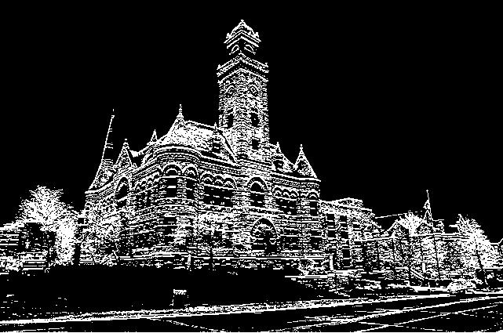
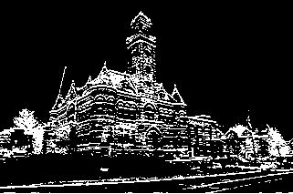
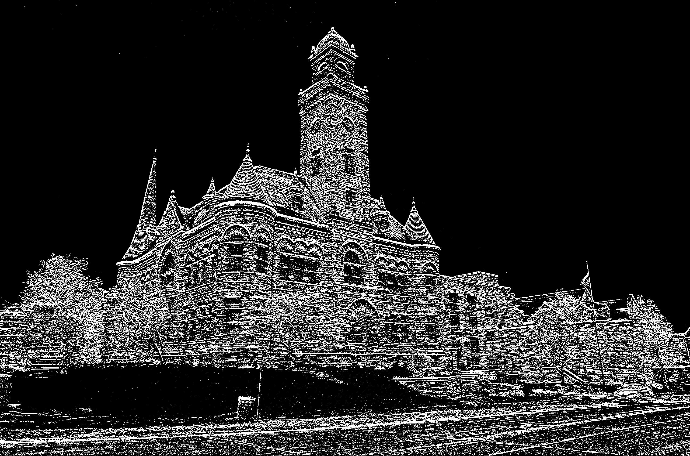
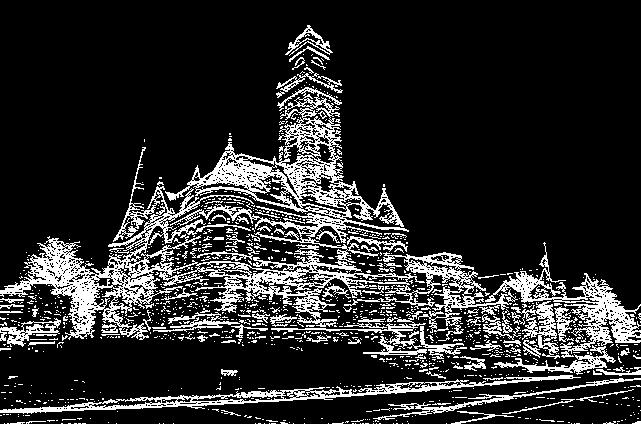
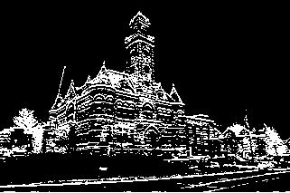
|
 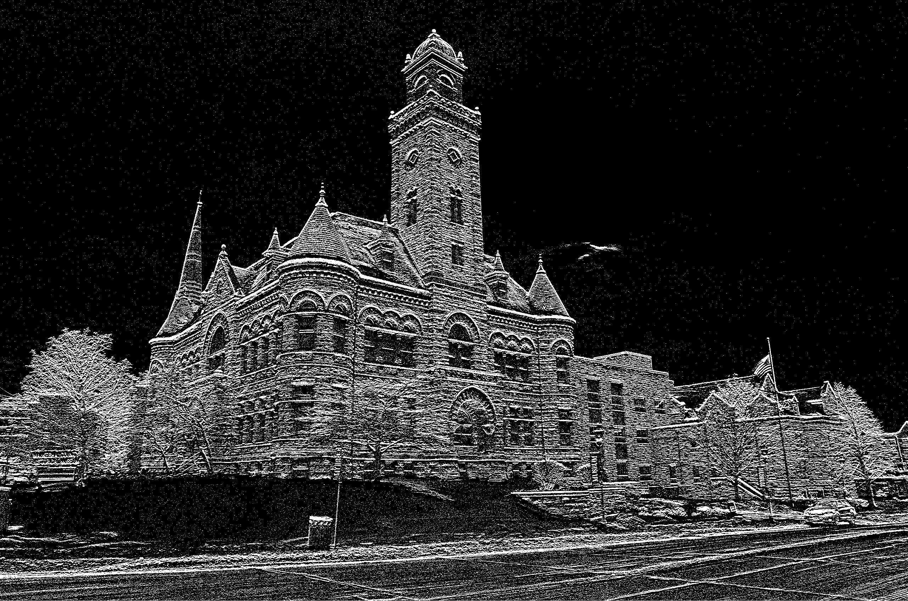
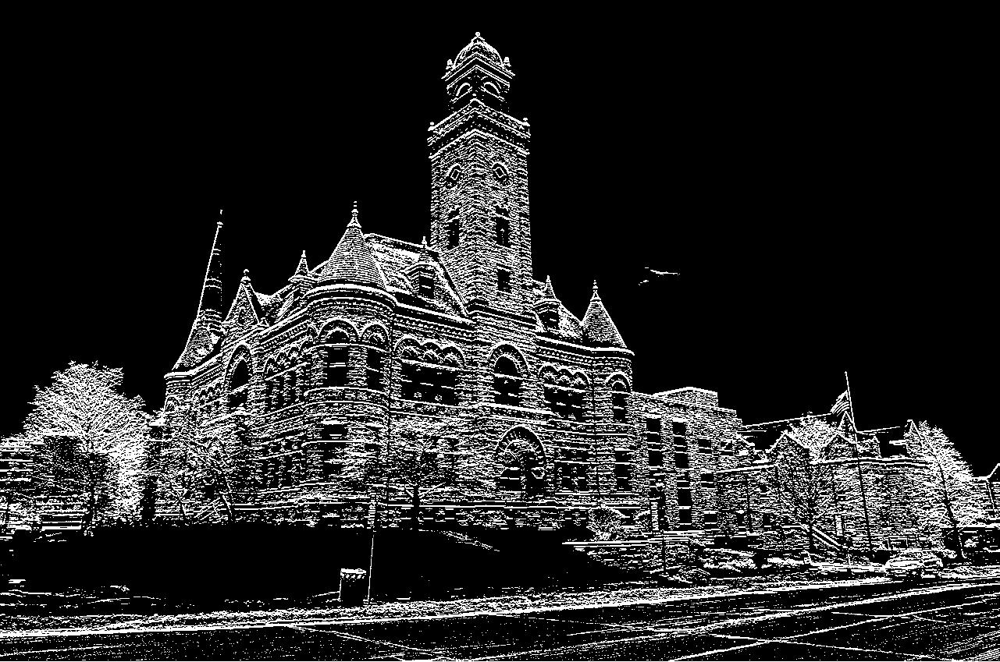
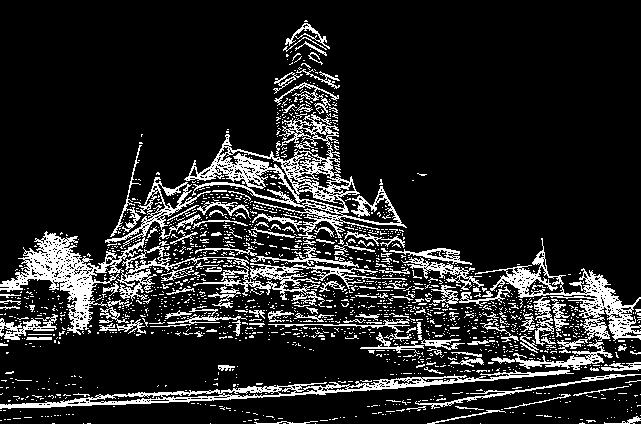
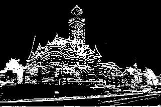
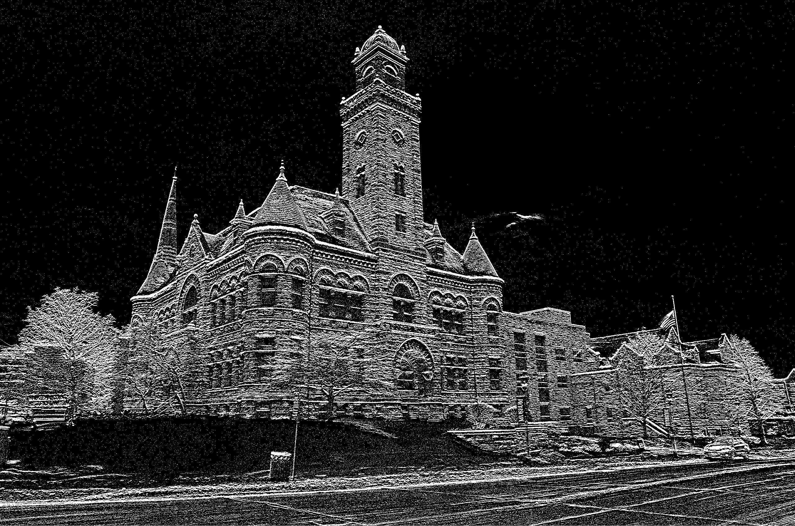
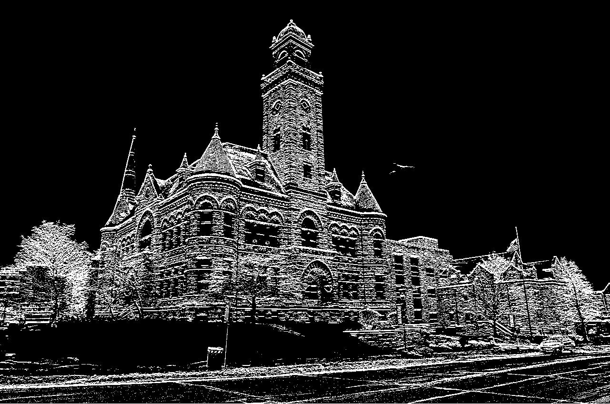
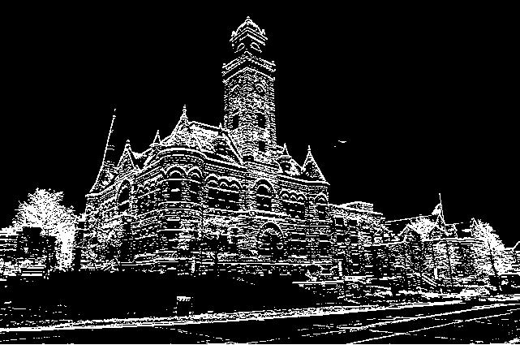
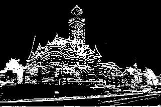
|
In addition to implementing Ward's standard method, we also improved upon his method by putting the images through an edge filter before running the algorithm. In order to test Ward's algorithm, we used our same HDR image set that contains 3 images but shifted the images by varying amounts. We found that putting the images through edge filters before running Ward's algorithm greatly improved our results. Two main parameters in the Ward's algorithm are the maximum amount of bits that you allow the images to be shifted, as well as the noise tolerance. In particular, without using an edge filter, the algorithm was much more likely to produce extremely large (and faulty) image shifts as we increased either/both parameter values. Therefore, we found that using an edge filter improved results for all parameter values.
|